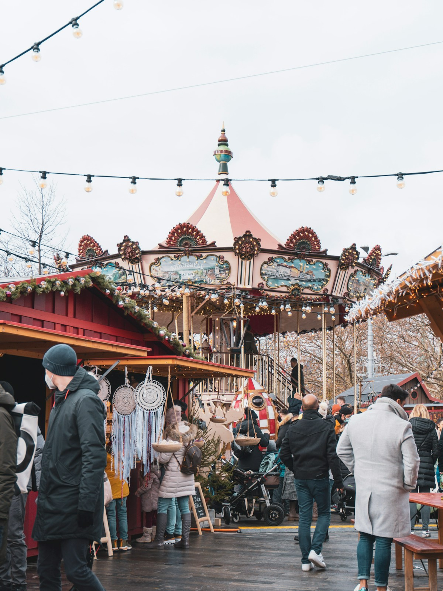

Best Time to Visit Switzerland
Chapter 5
Best Time to Visit Switzerland
Overview
Switzerland is a year-round destination, with each season offering a unique experience. The best time to visit depends on your preferences, budget, and planned activities.
Spring (March - May)
| Aspect | Details |
|---|---|
| Weather | Mild and pleasant, temperatures 8°C - 18°C |
| Pros | Fewer crowds, blooming flowers, lower prices, pleasant weather for sightseeing |
| Cons | Some mountain attractions still closed, unpredictable weather, occasional rain |
| Tourist Crowds | Low to moderate |
| Recommended Activities | City tours, lake cruises, hiking in lower altitudes, exploring Old Towns |
Summer (June - August)
| Aspect | Details |
|---|---|
| Weather | Warm and sunny, temperatures 18°C - 28°C |
| Pros | Best weather, all attractions open, ideal for hiking, long daylight hours |
| Cons | Peak tourist season, highest prices, crowded attractions |
| Tourist Crowds | Very high (peak season) |
| Recommended Activities | Hiking, mountain excursions, paragliding, lake swimming, boat cruises |
Autumn (September - November)
| Aspect | Details |
|---|---|
| Weather | Cool and crisp, temperatures 8°C - 18°C |
| Pros | Autumn foliage, fewer tourists, lower prices, great for photography, wine festivals |
| Cons | Days get shorter, some mountain attractions close in late autumn |
| Tourist Crowds | Moderate |
| Recommended Activities | Photography tours, wine tasting, hiking, scenic train rides |
Winter (December - February)
| Aspect | Details |
|---|---|
| Weather | Cold and snowy, temperatures -2°C - 7°C |
| Pros | Christmas markets, winter sports, magical snowy landscapes, cozy atmosphere |
| Cons | Very cold, shorter daylight hours, some attractions closed, high prices in ski resorts |
| Tourist Crowds | High in ski resorts, moderate in cities |
| Recommended Activities | Skiing, snowboarding, Christmas markets, thermal baths, mountain cable cars |

Traditional Swiss Christmas market with festive lights | Image: Unsplash (Seri)
Best Time for Specific Activities
| Activity | Best Season |
|---|---|
| Hiking & Trekking | June - September |
| Skiing & Winter Sports | December - March |
| Sightseeing & City Tours | April - October |
| Lake Cruises | May - September |
| Mountain Excursions | June - September |
| Photography | September - October (autumn colors) |
| Budget Travel | March - May, September - October |
| Christmas Markets | Late November - December |
Recommended Seasons for Indian Travelers
Summer (June-August) is ideal for best weather. Autumn (September-October) is perfect for photography and fewer crowds. Winter (December-February) is excellent for snow experiences and Christmas markets.